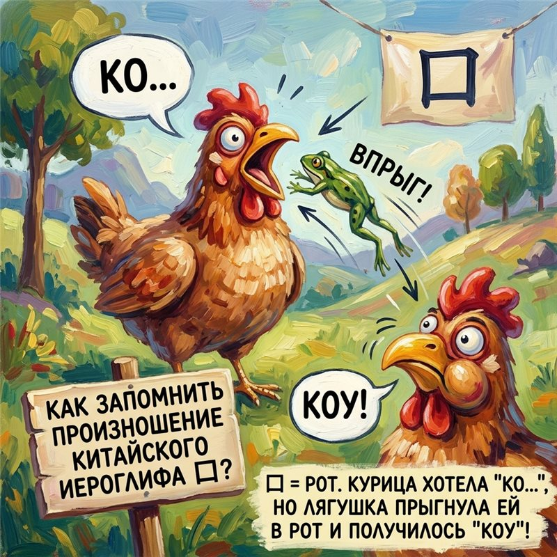

Магистр Коко
Магистр Коко
Хе-хе-е... (хитро прищуривается) Я — Магистр Коко, а это моя звуковая башня. Слушай сказку-заклинание...
Представь курицу, которая хотела произнести «КО-КО», но лягушка залетела ей в рот — и получилось «КОУ»! Так и запомнишь: 口 = kǒu.

«КО-КО» + лягушка в рот = «КОУ» · наведи, чтобы рассмотреть 🔍
口
мелодия kǒu: вниз — и «скребём» по низу
🪄 Важно о тонах!
1-й
2-й
3-й — наш!
4-й
нейтр.
В китайском слоги произносятся с разной мелодикой — 4 тона плюс нейтральный. Тон меняет смысл слова! У 口 — 3-й тон: голос опускается вниз и «скребёт» по низу.
Заклинание жеста: проведи рукой вниз, произнося «kǒu» — как будто гладишь спящего дракона по спине. 🐉
Если звук не воспроизвёлся — не удалось загрузить аудио.
Урок 1 · 口 (kǒu) · Часть 2 из 5 — Звуковая ассоциация